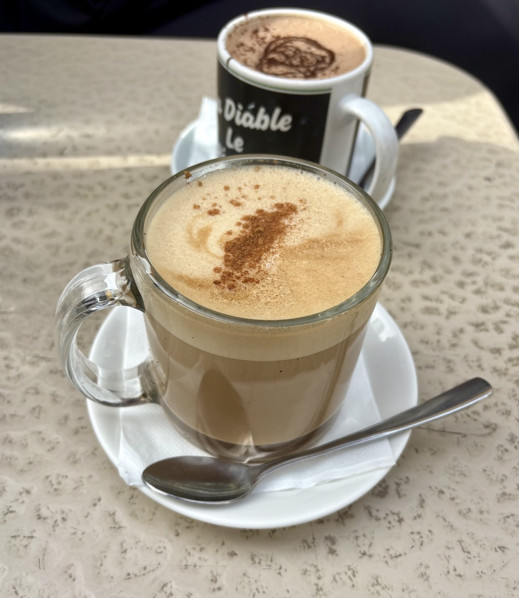
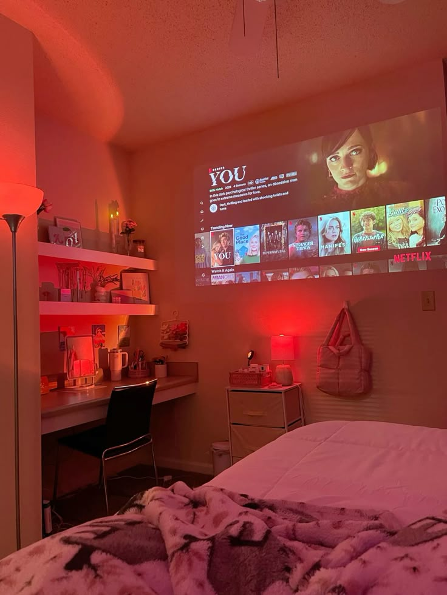

I've been thinking a lot recently about my routine. Small things I do everyday to make my day better or ways to improve my routine for a better lifestyle. Here's a few things I like to do:

I often go to bed every night looking forward to starting my day off with the same simple breakfast I make myself everyday, without fail. I start with a fried egg, ham, and cheese on sourdough followed by an iced coffee. I usually make my coffees at home and take them along with me to class or I stop at Dunkin or Starbucks on my way to class. Allowing myself a nutritious breakfast and some caffeine really boosts my energy making my day ten times more productive and enjoyable.
After classes I make an effort to carve time out of my day to get active. When the weather is nice I enjoy long walks whether it be alone or with friends. I also enjoy going to the local gym and getting a quick lift in. This part of my routine is very important to me as it helps reduce stress and clears my mind.

My favorite part of my routine is being able to relax at home after a long day. I often watch a TV show or movie with my roommates and enjoy some comfort snacks to end my day in a peaceful stress-free environment.